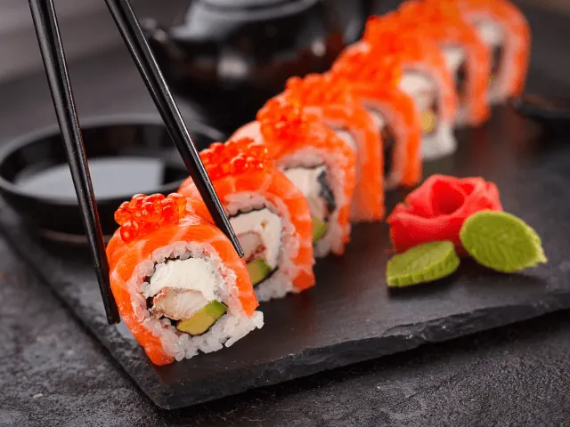
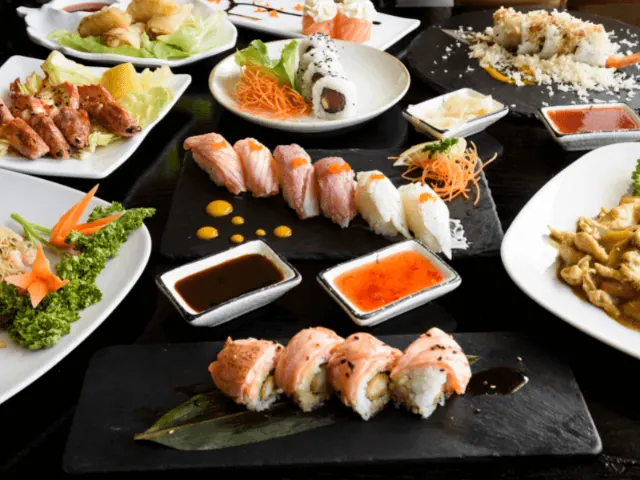
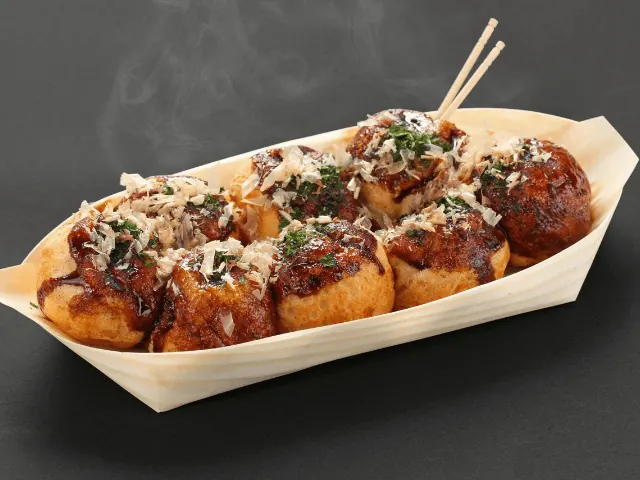

Sushi in Nijmegen: de beste Japanse restaurants
Gepubliceerd op 14 februari 2023, bijgewerkt op 9 november 2026
Onderdeel van de gids Restaurants in Nijmegen

Zin in sushi in Nijmegen? Je kunt in de stad aan tafel bij een Japans restaurant met uitzicht op de Waal, onbeperkt sushi eten voor een vaste prijs, of een sushibox laten bezorgen. Wij zetten de beste adressen voor sushi en Japans eten in Nijmegen op een rij, per soort.
Sushi eten in het centrum van Nijmegen
iZZi: sushi aan de Waal
Aan de Vismarkt in de benedenstad zit iZZi, een Aziatisch restaurant met de nadruk op Japanse sushi. Je eet er signature rolls, nigiri en sashimi, maar ook dim sum en gerechten van de grill. De kaart is gemaakt om te delen. Binnen kijk je uit over de rivier en bij mooi weer zit je op het terras, met de zonsondergang boven de Waal. Een goede keuze voor een etentje met z'n tweeën of een verjaardag.

Tomi Sushi & Grill
Tomi Sushi & Grill zit aan Klein Mariënburg, vlak bij het Mariënburgplein. Je eet er all you can eat: twee uur lang bestel je zoveel sushi en gerechten van de grill als je wilt, voor een vast bedrag per persoon. Je kunt er lunchen en dineren, kinderen eten voor een eigen tarief mee en je kunt er ook afhalen.
SUMO in de Molenstraat
De Nijmeegse vestiging van SUMO zit in de Molenstraat. Ook hier eet je all you can eat: per ronde bestel je een paar gerechtjes, van sushi tot yakitori van de grill. 's Avonds kies je tussen een gewone en een premiumkaart, en in het weekend kun je er ook lunchen.
All you can eat sushi in Nijmegen
Onbeperkt sushi eten voor een vaste prijs is in Nijmegen populair, zeker met een groep. Naast Tomi en SUMO in het centrum kun je hier terecht:
- Saison aan de Wijchenseweg, op de Woonboulevard: Japans all you can eat met Aziatische specials zoals dim sum. Je kunt je drankjes in het arrangement meenemen en je parkeert op de Woonboulevard.
- Orient Plaza op het Kerkenbos: vier Aziatische restaurants onder één dak. Jiro is het all-you-can-eat sushi- en grillrestaurant, bij Kyoto kijk je hoe de kok Japanse gerechten op de teppanyakiplaat bereidt.
Meer tips, ook buiten de Japanse keuken, lees je in ons artikel All you can eat in Nijmegen: de beste restaurants.

Sushi afhalen of laten bezorgen in Nijmegen
Liever sushi op de bank? Deze zaken maken sushi om af te halen of te laten bezorgen:
- Sushi Toku in de Hertogstraat: volgens veel Nijmegenaren de lekkerste sushi om mee te nemen, met nigiri, temaki en vegetarische keuzes. Je bestelt telefonisch.
- Ookini aan de Van Welderenstraat: nigiri, maki, sashimi, poké bowls en warme hapjes zoals gyoza, met grote sets om te delen.
- Sushi Maison aan de Couwenbergstraat in Nijmegen-Oost: van klassieke nigiri tot special rolls, sushitaco's en party boxen.
- Komo Sushi in Lindenholt: rolls met gevlamde zalm, Korean fried chicken en een veggie box.
- Oyasushi op het Zwanenveld bij station Dukenburg: sushi en poké bowls om af te halen, met een flinke vegetarische keuze.
- Sjoesie in Bottendaal en I Love Sushi aan de Molenweg: online bestellen en thuis laten bezorgen.
Meer Japans eten: ramen
Japans eten is meer dan sushi. Voor een dampende kom ramen ga je naar Kings of Ramen in de Hertogstraat, waar ook udon, donburi en Japanse curry op de kaart staan. Shibui in de Augustijnenstraat maakt ramen in Sapporo-stijl om af te halen of te laten bezorgen.

Tips voor sushi eten in Nijmegen
- Reserveer bij all you can eat in het weekend, dan zit het vaak vol. Let op de tijdslimiet van meestal twee uur.
- Met kinderen? Bij Tomi, SUMO en Saison eten kinderen voor een eigen tarief mee.
- Geen vis? Bijna elke sushizaak heeft vegetarische rolls; Ookini en Komo Sushi hebben ook vegan keuzes.
Op zoek naar iets anders? Bekijk ook onze tips voor Aziatisch eten in Nijmegen, Thais eten en alle restaurants in Nijmegen.
Veelgestelde vragen
Waar eet je de lekkerste sushi in Nijmegen?
Voor sushi aan tafel zijn iZZi aan de Vismarkt (met uitzicht op de Waal), Tomi Sushi & Grill en SUMO in de binnenstad populair. Wil je thuis eten, dan is Sushi Toku in de Hertogstraat een vaste favoriet.
Waar kun je all you can eat sushi eten in Nijmegen?
Bij Tomi Sushi & Grill (Klein Mariënburg), SUMO (Molenstraat), Saison (Wijchenseweg) en Jiro bij Orient Plaza (Kerkenbos). Je betaalt een vast bedrag per persoon en bestelt in rondes.
Kun je in Nijmegen sushi laten bezorgen?
Ja. Onder meer Sushi Toku, Ookini, Sushi Maison, Komo Sushi, Sjoesie en I Love Sushi bezorgen in Nijmegen. Bij de meeste kun je ook afhalen.
Waar eet je ramen in Nijmegen?
Bij Kings of Ramen in de Hertogstraat ga je aan tafel; Shibui in de Augustijnenstraat maakt ramen om af te halen of te laten bezorgen.
Sushi en Japans eten in Nijmegen
Zin om te beginnen? In onze bedrijvengids vind je alle 24 sushi- en Japanse restaurants in Nijmegen, met openingstijden, kenmerken en een kaart.
Bekijk alle 24 sushi- en Japanse restaurants in Nijmegen
Heb je zelf een sushirestaurant? Laat je hier uitlichten.